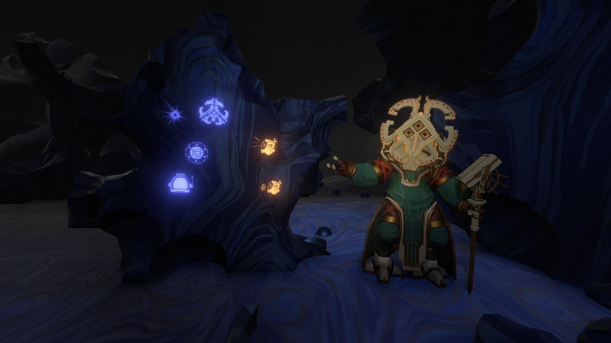

Welcome to the Adventure
Embark on an unforgettable journey through the Outer Wilds universe, a place where curiosity fuels exploration and
every corner of the cosmos holds mysteries waiting to be uncovered. As an intrepid explorer, you'll delve into the
interconnected stories of the solar system's inhabitants, its ancient ruins, and its celestial wonders. Whether you're a
seasoned traveler or a newcomer, this guide will help you navigate the stars, connect with its fascinating people,
and uncover the secrets of a universe that feels truly alive.
From the close-knit Hearthians to the enigmatic Nomai, and from perilous black holes to quantum mysteries, this is a place
where science and wonder collide. Prepare to have your mind expanded, your heart warmed, and your sense of awe renewed.
Adventure awaits!
The Solar System
The Outer Wilds solar system is a vibrant and dynamic collection of planets, moons, and celestial phenomena, each with its
own unique story to tell. Key highlights include:
- Timber Hearth: A lush, forested planet and the home of the Hearthians.
- Ember Twin and Ash Twin: A pair of closely orbiting planets locked in an eternal dance, where sand flows
like an hourglass between them.
- Brittle Hollow: A frozen planet slowly crumbling into a black hole at its core.
- Giant's Deep: A massive ocean world with towering cyclones and mysteries hidden in its depths.
- Dark Bramble: A haunting, thorny maze of a planet where danger lurks around every corner.
Each celestial body offers unique challenges and breathtaking beauty, encouraging explorers to push the limits of their ingenuity.
The Hearthians
The Hearthians are a warm, curious, and inventive species native to Timber Hearth. Despite their humble beginnings,
they have achieved remarkable advancements in space exploration, creating the Outer Wilds Ventures program to explore the stars.
Their close-knit community thrives on collaboration, music, and storytelling.
Hearthians have a unique perspective on the universe, valuing the connections between people and places. They live for discovery,
celebrating every step of their journey with songs, laughter, and camaraderie. Whether it's roasting marshmallows by the campfire
or piloting makeshift spacecraft, their spirit of adventure is unmatched.
The Nomai
The Nomai are an ancient, sophisticated species who once roamed the universe in pursuit of knowledge and understanding. Driven by
their insatiable curiosity, they constructed intricate technologies and left behind ruins that still puzzle explorers today.
The Nomai were masterful engineers and scientists, crafting devices like the Quantum Moon Locator and the
Orbital Probe Cannon. Their writings, found etched on walls and tablets, reveal their philosophical nature and
their profound dedication to understanding the nature of existence.
Though their fate remains a mystery, the Nomai's legacy lives on in the stories and discoveries they left behind. They remind us of
the endless pursuit of knowledge and the interconnectedness of all life.
